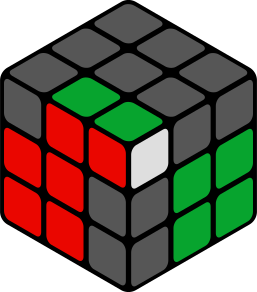

First Two Layers переводится как Первые два слоя. После собранного начального креста, чтобы собрать первые два слоя одновременно, нужно поставить 4 пары "сторона-угол" - угловой кусочек содержащий белый цвет + боковой, соответствующий ему. Вариантов расположения этих двух кусочков для каждой пары не много не мало 41.
Придется выучить их все, если хотите собирать первый слой одновременно со вторым. Для каждого случая может быть написан более чем один вариант решения, можно выбрать наиболее для себя удобный.
Варианты упорядочены по принципу "от простого к сложному", так что можно учить их именно в этом порядке.
На всех рисунках - красная сторона фронтальная, зеленая - правая.
U R U' R' U' y L' U L
U R U' R' U' F' U F
U R U R' U' F' U' F
y U' L' U L U y' R U' R'
U' F' U F U R U' R'
R' F' R U R U' R' F
U' R' F R F' R U R'Следующие 4 алгоритма являются базовыми для большинства вариантов F2L. Большинство следующих алгоритмов делаются интуитивно, путем приведения к одному из данных случаев. Поэтому настоятельно рекомендуем их выучить.U R U' R'
R' F R F'
y U' L' U L
F R' F' RR U R'
y2 L U L'
y F U F'y L' U' L
F' U' F
y' R' U' RОстальные алгоритмы приводятся к тому положению, которые мы уже изучили. Вы можете их запоминать, а можете сразу тренироваться собирать интуитивно.
U' R U2 R' U2 R U' R'
U' R U2 R' U' R U2 R'
U' R U2 R' U R' F R F'
d R' U' R U2 R' U R
y U L' U' L U2 L' U L
U' r U' R' U R U r'
U' R U R' U2 R U' R'
U' R U R' U' R U2 R'
U' R U R' U R' F R F'
d R' U2 R U2 R' U R
r' U2 R2 U R2’ U r
y U L' U2 L U2 L' U L
U' R U' R' U F' U' F
U' R U' R' d R' U' R
F R U R' U' F' R U' R'
U' R U R' U R U R'
U y' R' U R U' y R U R'
U2 R U' R' U' R U R'
y' U R' U R U' R' U' R
d R' U R U' R' U' R
M' U' R U R' U' R U2 r'
R U' R' U R U' R' U2 R U' R'
R' U2 R2 U R2 U R
U F' U2 F U' R U R'
U' R U2 R' U F' U' F
U' R U2 R' d R' U' R
y' R U2 R2 U' R2 U' R'
U' R U' R' U R U R'
y L' U2 L U2 F U2 F' U F U' F'
R U' R' U R U2 R' U2 R U' R'
R U R' U2 R U' R' U R U' R'
y L' U L U2 y' R U R'
R U2 R' U R U R' U R U' R'
R U' R' U2 F' U' F
R U' R' U2 y L' U' L
R U' R' U d R' U' R
R U2 R' U' R U R'
y L F' L' F L' U L U' L' U L
U' R U' R' U2 R U2 R2 F R F'
y' R' U2 R U R' U' R
y L' U2 L U L' U' L
R' F R F' R U' R' U R U' R'
U R U2 R' U R U' R'
U R U2 R2 F R F'
R U' R' U R U' R' U R U R'
U2 R U R' U R U' R'
R U' R' U2 R U R'
y F R U2 R' F'
y' U' R' U2 R U' R' U R
y U' L' U2 L U' L' U L
U' R U' R2 F R F' R U' R'
F' L' U2 L F
y' U2 R' U' R U' R' U R
r U' r' U2 r U r'
R U R' U2 R U R' U' R U R'
U R U' R' U' R U' R' U R U' R'
U2 R2 U2 R' U' R U' R2
F U R U' R' F' R U' R'
U' R U R2 F R F' R U' R'
y U' L' U L U L' U L U' L' U L
R' F R F' R' F R F'
y L' U' L U L' U' L
y' R' U' R U R' U' R
R U' R' U R U' R'
R U' R2 F R F'
y L' U' L U2 F U' F'
R U R' U' F R' F' R
y L' U L U' L' U L
y' R' U R U' R' U R
R U R' U' R U R'
F R' F' R F R' F' R
y U' L' U' L U2 F U2 F' U F U' F'
U' R' F R F' R U' R'
R U' R' y L' U2 L
l F' R U' R' U l'
U' R U R' U F' U' F
U2 R U R' F R' F' R
U M' U R U' r' R U' R'
R U R' U' R U R' U' R U R'
U R U' R' U R U' R' U R U' R'
R2 U R2 U R2 U2 R2
U2 R' F R F' U2 R U R'
U F' U' F U' R U R'
R2 u R U R' U' u' R' U R'
U' R U' R' U2 R U' R'
U' R U' R' U R' F R F'
R U R' U' R U' R' U R U' R'
U R U R' U2 R U R'
U' R U2 R' U R U R'
y U L' U L U2 L' U L
U R U R' U2 R U R'
U' R U2 R' U R U R'
y U L' U L U2 L' U L
R U R' U' R U' R' U2 y' R' U' R
R U F R U R' U' F' R'
R U' R' F' L' U2 L F
R U' R' F R U R' U' F' R U' R'
r U' r' U2 r U r' R U R'
R F U R U' R' F' U' R'
R U R' U2 R U' R' U R U R'
R U' R' U R U2 R' U R U' R'
R U2 R U R' U R U2 R2
R U R' U' R U2 R' U' R U R'
R U' R' U' R U R' U2 R U' R'
R2 U2 R' U' R U' R' U2 R'
Советы как учить F2L
Сделайте себе шпаргалку, Если перед компьютером, то шпаргалкой может быть эта страница. Берем кубик, запутываем и начинаем собирать. Смотрим, какой случай F2L попался, и делаем его, сначала со шпаргалкой, потом стараться запоминать. И много раз так разбираем и собираем кубик.
Если учить последовательно, "выучил алгоритм, начал его применять при сборке, через день-два выучил еще один", то так, на наш взгляд, будет мало пользы. Потому что случаев 41, и далеко не всегда вам будет попадаться именно этот выученный случай, придется много раз собрать кубик старым способом, прежде, чем вам попадется этот алгоритм. Получается, что много времени будет тратиться впустую.
Наш совет - переходить сразу на все алгоритмы окончательно и бесповоротно, т.е. сразу резко бросить собирать старым способом, и начать собирать новым. Пусть первое время со шпаргалкой, но так дня за 3-4 вы запомните большинство алгоритмов, и уже шпаргалка будет нужна реже. Таким образом потихоньку запомните все алгоритмы.

/XXRRRXRRX-XRXXXXGXX-WXXXGGXGG.svg) U' R U R' U R U R'
U y' R' U R U' y R U R'
U2 R U' R' U' R U R'
U' R U R' U R U R'
U y' R' U R U' y R U R'
U2 R U' R' U' R U R'/XXGRRXRRX-XXXXXRWXX-RXXXGGXGG.svg) U R U2 R' U R U' R'
U R U2 R2 F R F'
R U' R' U R U' R' U R U R'
U R U2 R' U R U' R'
U R U2 R2 F R F'
R U' R' U R U' R' U R U R'